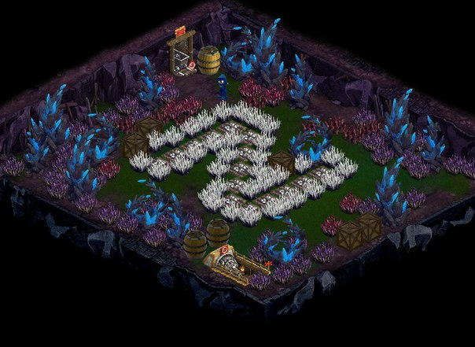
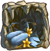

Получено: файл; исходный URL. Фото Погреба пришельцев по подписи статьи; стадия расчистки и соответствие изначальной расстановке точно не установлены. Файл получен с moy.su по пути zombicity.info, побайтовая идентичность с другим хостом не проверена; без перекодирования. Страница: источник.
Погреб пришельцев
историческая браузерная версия; платформа и редакция не уточнены- Тип
- Локация по каталогу ЗомбиСити
- Версия и дата
- историческая браузерная версия; платформа и редакция не уточнены
Дополнительные изображения

Данные по источнику · браузерная «Зомби Ферма» / «Зомби Мания»; платформа не уточнена · снимок каталога 10.12.2019; дата редакции неизвестна
Предварительно: Фанатский каталог; возможны общие картинки для разных локаций и зависимость от других источников.. Требуется сверка.
- Каталог
- В разделе «Новые Острова в игре» указана локация «Погреб пришельцев».
- Оговорка
- Каталог показывает название, картинку и ссылку; отдельная статья по этой ссылке не прочитана в рамках этого импорта. Условия доступа и версии требуют проверки.
- Сравнение снимков
- Эта же подпись, раздел и адрес картинки присутствуют в снимке того же каталога 14.09.2018; это не независимое подтверждение.
Данные по источнику · историческая браузерная версия; платформа отдельно не уточнена · снимок 26.10.2019; дата редакции неизвестна
Предварительно: Прочитана отдельная архивная статья; независимость от других источников не установлена.. Требуется сверка.
- Путь
- С Космического хутора через Хижину пришельцев; через Древний тоннель — в Серебряную шахту.
- На острове
- Посаженные огурцы; Железные семена могут выпадать при вырубке крупных ресурсов.
- Возврат
- Возврат на Космический хутор: 50 000 монет, 5 фольги и 5 Времени.
- Предупреждение
- Исторический источник сообщает, что после ухода из погреба по квестам вернуться нельзя. Это утверждение не проверено для других версий.


Данные по источнику · браузерная социальная версия; платформа и редакция требуют уточнения · дата в адресе источника; дальнейшие правки неизвестны
Предварительно: Исторический фанатский источник, возможно позднее редактирование. Не переносить автоматически на другие версии.. Требуется сверка.
- Временный доступ
- Статья предупреждает, что после ухода по квестам нельзя вернуться в Погреб. Текст также упоминает сбор огурцов и возможные Железные семечки из крупных ресурсов; не все выпадают гарантированно.
- Маршрут
- Вход с Космического хутора через Хижину, переход в шахту через Древний тоннель. Статья для возврата на хутор приводит 50 000 монет, 5 фольги и 5 Времени.
Связанные сущности
- Серебряная шахта — путь через Древний тоннель
- Хижина пришельцев — ведёт в локацию
- Космический хутор — путь через Хижину пришельцев
Источники
- ЗомбиСити: архив каталога, снимок 10.12.2019
- Ссылка из каталога; отдельная статья не проверена
- ЗомбиСити: прочитанная отдельная архивная статья
- ЗомбиСити: тот же каталог, снимок 14.09.2018; не независимый источник
- Zombie-island.moy.su — иллюстрация каталога (связанный источник)
- Zombie-island: статья и подписанная фотография